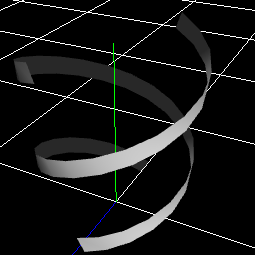

1.60 新機能¶
共通¶
基本¶
位置の継承に子パーティクルが親パーティクルの位置を追従する動きを追加しました。
位置¶
パスによる移動が追加しました。
常にスクリーンの中央にパーティクルを表示するためのカメラオフセットを追加しました。
拡大¶
単体Fカーブ を追加しました。
力場¶
沢山の種類の力場を追加しました。
プロシージャルモデル¶
プロシージャルモデルを追加しました。
Effekseer内でパラメーターの調整のみで簡単なモデルを作成できます。 作成したモデルはそのまま表示したり、生成位置に使用したりできます。
イージング¶
イージングの種類を大幅に増やしました。
描画¶
様々な描画方法を追加しました。
最大6枚の画像により歪み、画像同士のブレンド、画像の切り抜き等様々な表現をマテリアルの設定なしで実現できるようになりました。 ソフトパーティクルにより、背景との境界を自然に見せれるようになりました。


フェードありのアニメーションを追加しました。
アニメーションの切り替わりを線形補完するようにします。 それにより、急に画像が変化しないようにします。
ファイル名に_NoMipを含めるとNoMipMapとしてテクスチャが読み込まれるようになりました。
マテリアル¶
ソフトパーティクルをマテリアルで実装するのに必要なノードを追加しました。
エフェクトの拡大率を取得するノードを追加しました。
動的パラメーター¶
step関数を追加しました。
最適化¶
マルチスレッドによる更新を実装しました。更新速度を高速化しました。
ジオメトリインスタンスを実装しました。同じモデルを複数表示した場合の速度が向上しました。
ツール¶
パッケージング¶
パッケージ機能が追加されました。
エフェクトに関連するファイルを纏めて1つのパッケージにエクスポートしたり、パッケージからインポートしたりできます。
UI¶
ドッキングパネルの挙動を変更
フレームレスのウインドウに変更 (Windows)
録画¶
録画機能に録画サイズの拡大率が追加されました。
オプション¶
ビューポートを操作するマウスマッピングを変更する設定を追加(Maya風、Blender風等を選択可能)
環境¶
地面の表示を追加しました。

ランタイム¶
C++のソースコードを大幅にリファクタリングしました。
安全性が向上しました。 ただし、多数破壊的変更が発生しています。詳しくはランタイムのreadmeを読んでください。